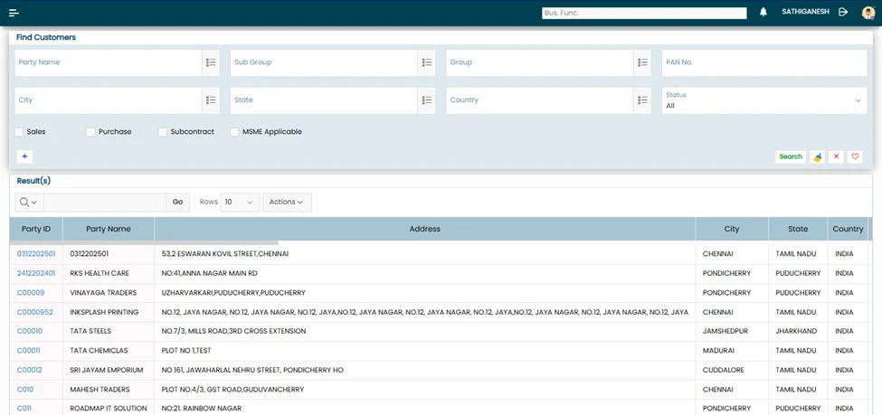
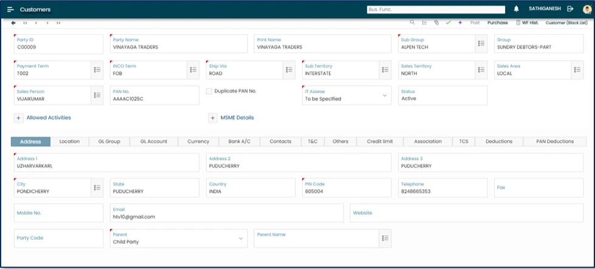
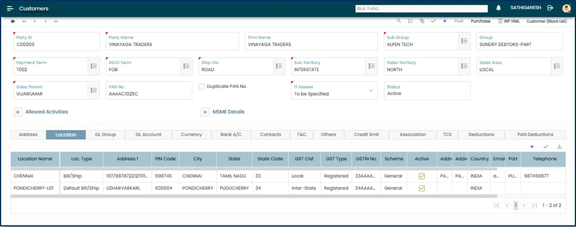
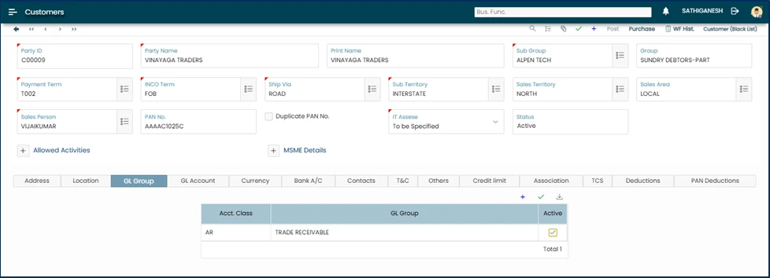
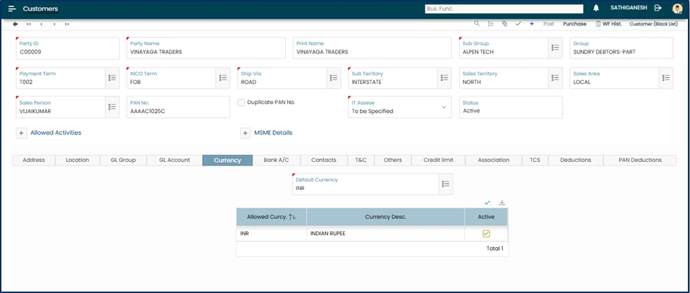
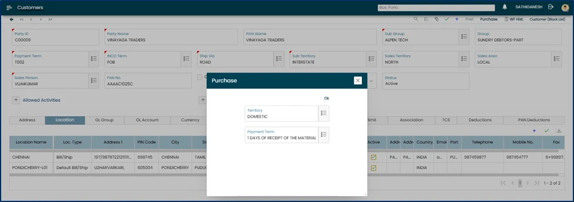
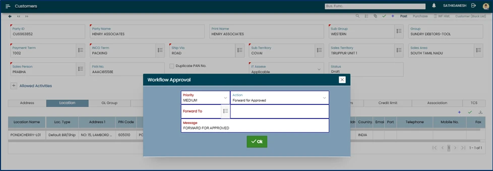

<div data-category="Financials" data-title="Customers" data-updated="December 01, 2025" data-contributors="RoadmapIT" data-breadcrumb="Home,Financials,Customers">
  <div class="page-content">
    <p>Customers are the people or entities that owe money to a company for the goods or services that they have purchased or used on credit. Customers are also known as debtors, receivables, or trade receivables.</p>
    <p>They are recorded as an asset on the company's balance sheet, because they represent a legal claim to future cash payments. Customers are usually classified by their payment terms, such as net 30, net 60, or net 90 days.</p>
    <p>Customers can also be grouped by their industry, location, credit rating, or other criteria. The management of customers involves issuing invoices, collecting payments, offering discounts, applying interest charges, writing off bad debts, and reporting on the status and performance of the receivables.</p>
    <p>This screen is used to define the Customers Data and it is used to add, modify and delete Customers.</p>
    <h2>Navigation path</h2>
    <p class="fs-6">Setup \ Customers</p>
    
    <ul style="list-style-type: none; align-content: center">
      <li class="mouse-icon">Search screen displays the list of customer with the relevant details.</li>
      <li class="mouse-icon">Click on search to filter all the records.</li>
      <li class="mouse-icon">User can filter the respective documents by entering the search parameters at the header.</li>
      <li class="mouse-icon">Using search, system displays the results relevant to the search parameters entered.</li>
      <li class="mouse-icon">On-click; the corresponding transaction record will be displayed.</li>
      <li class="mouse-icon">
        Using
        
        icon, entered search parameters can be cleared.
      </li>
      <li class="mouse-icon">
        To close the screen, use
        <i class="bi bi-x fs-4 mx-2 text-danger"></i>
        icon.
      </li>
      <li class="mouse-icon">
        By Clicking the
        <i class="bi bi-plus fs-4 mx-2 text-primary"></i>
        Add button we can create new customer
      </li>
    </ul>
    <h2>Address</h2>
    
    <ul style="list-style-type: none; align-content: center">
      <li class="mouse-icon">Enter the Party ID.</li>
      <li class="mouse-icon">Enter the Party Name.</li>
      <li class="mouse-icon">Enter the Print name.</li>
      <li class="mouse-icon">Select the Sub group from LOV; Group, Payment term, Ship Via and INCO Term get populated automatically based on the sub group selection.</li>
      <li class="mouse-icon">Enter the customer Address, City from LOV, Zip, Telephone number and Mobile number.</li>
      <li class="mouse-icon">
        Click
        <i class="bi bi-check-lg fs-4 mx-2 text-success"></i>
        to save the entry.
      </li>
    </ul>
    <h2>Location</h2>
    
    <ul style="list-style-type: none; align-content: center">
      <li class="mouse-icon">Location will be automatically created from the address</li>
      <li class="mouse-icon">
        If required, Click
        <i class="bi bi-plus fs-4 mx-2 text-primary"></i>
        to add a new Location
      </li>
      <li class="mouse-icon">Enter the Location Description.</li>
      <li class="mouse-icon">Enter the Address1.</li>
      <li class="mouse-icon">Select the City from LOV.</li>
      <li class="mouse-icon">Select the GST classifications.</li>
      <li class="mouse-icon">Select the GST Type.</li>
      <li class="mouse-icon">Enter the GSTIN No. for registered Customer.</li>
      <li class="mouse-icon">Select the Scheme.</li>
      <li class="mouse-icon">
        Click
        <i class="bi bi-check-lg fs-4 mx-2 text-success"></i>
        to save the Entry.
      </li>
    </ul>
    <h2>GL Group</h2>
    
    <ul style="list-style-type: none; align-content: center">
      <li class="mouse-icon">
        Click
        <i class="bi bi-plus fs-4 mx-2 text-primary"></i>
        to add GL Group
      </li>
      <li class="mouse-icon">Select the Acct. Class</li>
      <li class="mouse-icon">Select the GL Group from LOV.</li>
      <li class="mouse-icon">
        Click
        <i class="bi bi-check-lg fs-4 mx-2 text-success"></i>
        to save.
      </li>
    </ul>
    <h2>Currency</h2>
    
    <ul style="list-style-type: none; align-content: center">
      <li class="mouse-icon">This tab page is used to specify the transaction Currency for the Customer.</li>
      <li class="mouse-icon">The given Currency cannot be changed if transaction already exists for the customer.</li>
      <li class="mouse-icon">Default currency is set as per the location, if required user can change the default currency and add new currency to the supplier in this tab.</li>
      <li class="mouse-icon">
        Click
        <i class="bi bi-plus fs-4 mx-2 text-primary"></i>
        to add Currency details.
      </li>
      <li class="mouse-icon">Select Allowed Curcy from LOV.</li>
      <li class="mouse-icon">Enable the active checkbox.</li>
      <li class="mouse-icon">
        Click
        <i class="bi bi-check-lg fs-4 mx-2 text-success"></i>
        to save.
      </li>
    </ul>
    <h2>Purchase</h2>
    <ul style="list-style-type: none; align-content: center">
      <li class="mouse-icon">To add the purchase details to customer click “Purchase” button and enter the territory and payment term details.</li>
      <li class="mouse-icon">Click “ok”</li>
    </ul>
    
    <ul style="list-style-type: none; align-content: center">
      <li class="mouse-icon">Click post button and the document will be forwarded for approval.</li>
    </ul>
    
    <ul style="list-style-type: none; align-content: center">
      <li class="mouse-icon">Log in Forward user.</li>
      <li class="mouse-icon">
        Click on View details
        <i class="bi bi-info-circle-fill fs-5 mx-2 text-primary"></i>
        to view the specific document.
      </li>
      <li class="mouse-icon">Screen navigate into query screen to check the details.</li>
      <li class="mouse-icon">After click the close button document navigate into Approval screen.</li>
      <li class="mouse-icon">Choose the Approval/forward/Return button field and click Process button required process performed.</li>
      <li class="mouse-icon">Choose the Approval/forward/Return button field and click Process button required process performed.</li>
      <li class="mouse-icon">Click Customer (Black List) button to add the Customer into the black list details to add the customer into black list.</li>
    </ul>
  </div>
</div>
